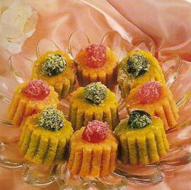
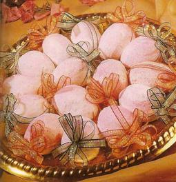
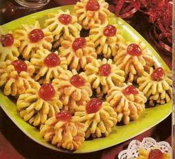
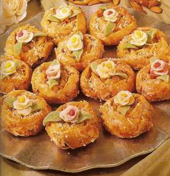

Buche

Ingédients:
1 boll d'amandes finement moulues.
1 bol de sucre glace.
1 blanc d'oeuf.
3 C. à soupe de cacao.
Eau de fleurs d'oranger.
Pour La FARCE:
1 bol de biscuits.
1 bol d'amandes.
1 bol de sucre glace.
1 verre à thé de beurre fondu.
1 C. à café de vanille
Préparation de la pâte d'AMANDES:
Dans un récipient, mélanger les amandes finement moulues et le sucre glace.
Humecter avec les blanc d'oeuf et continuer à mélanger.
Ajouter le cacao mélangé avec un peu d'eau de fleurs d'oranger.
Ramasser le tout jusqu'à obtenir une pâte lisse.
Préparation de la FARCE:
Dans un récipient, mélanger les biscuits moulus, les amandes et la vanille.
Ramasser le tout avec le beurre fondu, le sucre glace et la vanille.
Faire ensuite des boudins de 03 cm de diamètre.
Sur un plan de travail saupoudré de sucre glacen étaler la pâte d'amandes et
déposer dessus un boudin de farce.
Rouler la pâte d'amandes sur un tour complet autour de la farce, puis couper à l'aide
d'un couteau des pièces de 04 cm de long et le même nombre de pièce de 01 cm de long.
Déposer ensuite verticalement une petite pièce, sur chaque grande pièce disposée horizontalement.
Pour décorer, griffer la surface des gâteaux avec une fourchette pour leur donner l'aspect d'une vrais bûche.
Pour finir, saupoudrer de sucre glace.
Liste des recettes
CHARLOTTES

Ingédients:
4 mesures d'amandes finement moulues.
2 mesures de sucre glace tamisé.
Arômes pistache et fraise.
Colorants alimentaires vert et rouge.
3 blancs d'oeufs
>
Pour La DÉCORATION:
Demi-cerise confites vertes et rouges
1 poignée de noix de coco
POUR LE SIROP:
3 mesures de miel
1 mesure d'eau de fleurs d'oranger
Préparation:
Dans un récipient, mettre les amandes, le sucre glace et le colorant dilué dans l'arôme qui lui correspond.
Humecter avec les blancs d'oeufs battus en neige, jusqu'a obtenir une pâte ferme.
Laisser reposer.
Sur un plan de travail saupoudré de farine, abaisser la pâte à une épaisseur de 04 cm, à l'aide d'un rouleau à pâtisserie.
Découper les charlotte avec un emporte pièces.
Ajouter les cerises confites enrobées de noix de coco et disposer les gâteaux sur un plat enfariné.
Mettre à cuire au four pendant 20 min jusqu'a ce que le fond des gâteaux devienne rosé.
Après cuisson, mouiller avec du sirop.
Liste des recettes
F'Tirates
Ingédients:
POUR LA PÂTE:
3 mesures de farine SIM
1 mesure de mélange huil+smen
eau de fleurs d'oranger
POUR LE GLAÇAGE:
3 blancs d'oeufs
1 C. à soupe de jus de citron
1 C. à café d'huile
5 C. à soupe d'eau de fleurs d'oranger
Sucre glace
Perles alimentaires argentées
Préparation:
Dans un récipient, mettre la farine, le smen et l'huile.
Bien frotter entre les mains jusqu'à ce que le smen soit bien absorbé par la farine.
Former des boules et laisser reposer pendant 15 min.
A l'aide d'un rouleau à pâtisserie, abaisser la pâte à une épaisseur de 1 cm de diamètre.Découper ensuite des rondelles à l'aide
de'un verre à thé, sur les quelles vous découpez trois petits trous avec un petit bouchon.
Mettre ensuite à cuireau four pendant 20 min jusqu'à ce que le fond des gâteaux obtienne une couleur rosée.
Préparation du glaçage:
Battre les blancs d'oeufs en neige. Ajouter le jus de citron, l'huile, l'eau de fleurs d'oranger er le sucre glace au fur et à mesure; jusqu'à obteni un glaçage qui
ne coule pas: tester sur un gâteau, si c'est trop coulant ajouter du sucre glace.
Vous pouvez donner au glaçage la couleur de votre choix:
Pour le rose: colorant rose dilué avec l'extrait de fraise.
Pour le jaune: colorant jaune mélangé avec de l'extrait de citron.
Pour le vert: colorant vert mélangé avec de l'extrait de pistache.
Avant que le glaçage ne sèche, décorer avec des perles alimentaires de couleur.
Liste des recettes
Gâteaux secs
Ingédients:
Farine
5 à 6 oeufs
1 bol de sucre cristallisé
1 bol d'huile
1 paquet de levure chimique
1 C. à café de vanille
Zeste d'un citron
Préparation
Dans un récipient, mettre les oeufs, le sucre, l'huile, la vanille, le zeste de citron et la levure.
Bien mélanger le tout. Ramasser avec la farine e manire à obtenir une pâte facile à travailer, puis donner les formes que vous que vous désirez.
Les badigeonner avec du jaune d'oeuf à l'aide d'un pinceau, puis les saupoudrer de sucre cristallisé.
Mettre ensuite les gâteaux dans un plat enfariné allan au fou, puis mettre à cuire au four pendant 30 min, jusqu'à ce qu'ils aient une couleur dorée.
Liste des recettes
GHRIBA
Ingédients:
Farine
1 mesure d'amandes finement moulues
1 mesure de mélange de smen + huile
1 mesure de sucre semoule
1 C. à café de vanille
1 Poignée de pignons
Préparation
Dans une terrine, verser le mélange smen+huile, les amandes et la vanille.
Bien mélanger le tout et incorporer petit à petit la farine.
Bien frotter entre les mains jusqu'à ce que lea farine absorbe tout le gras.
La pâte obtenue doit s'assembler facilement.
Former ensuite des boules ou des demi-cecles, puis les piquer avec des pignons.
Les dispoder sur un plat saupoudré de farine et les mettre à cuire au four pendant
20 min, jusqu'à ce que le fond des gâteaux prenne une couleur rosée.
Liste des recettes
Losanges aux noix

Ingédients:
Première PÂTE:
200 gr de poudre d'amandes
250 gr de sucre glace tamisé
1 à 2 blanc d'oeufs
Colorant rose dilué dans de l'arôme fraise
Colorant vert dilué dans de l'arôme pistache
POUR LA DEUXIÈME PÂTE:
400 gr d biscuits (casse croûte moulus)
200 gr de noix grossièrement moulues (150 gr environ)
4 C. à soupe de miel
5 C. à soupe d'eau de fleurs d'oranger
8 C. à soupe de beurre fondu
1 C. à café de vanille
PRÉPARATION DE LA PÂTE N°1:
Dans une terrine, bien mélanger les amandes et le sucre glace tamisé.
Humecter avec le blanc d'oeuf pour obtenir une pâte lisse et facile à travailler.
La partager en 2 boules égales.
Colorer une boule en vertn et l'autre boule en rose.
Partager ensuite les 2 boules colorées en 2 parties égales.
Laisser reposer sur un plat saupoudré de sucre glace pour qu'elles ne collent pas.
PRÉPARATION DE LA PÂTE N°2:
Dans une soupière, mélanger les biscuits moulus, la noix moulue, la vanille, le beurre fondu
et l'eau de fleurs d'oranger.
Humecter avec du miel et travailler avec les mains pour obtenir une pâte homogène.
Sur un plat saupoudré de sucre glace, étaler la première pâte rose.
Ensuite la pâte verte, puisla pâte N°2.
Saupoudrer toute la surface de sucre glace, puis couper des losanges à l'aide d'un couteau.
Décorez ensuite chaque losange avec une demi-noix.
Liste des recettes
M'CHEWEK AUX PIGNONS

Ingédients:
3 mesures d'amandes
1 mesure de sucre cristallisé
1C à café de vanille
3 à 4 oeufs
Pignons
Cerises confites
POUR LA DÉCORATION
PRÉPARATION:
Dans un récipient, mélanger les amandes le sucre et la vanille.
Ajouter les oeufs jusqu'à obtenir une pâte malléable.
Former des petites boules de 03 cm de diamètre.
Les plonger dans kes blancs d'oeufs battus puis dans les pignons.
Ajouter une cerise confite sur chaque boule.
disposer sur un plateau saupoudré de farine et mettre à cuire au four à température moyenne.
Présenter dans des caissettes.
Liste des recettes
MGHABAR

Ingédients:
Farine
500 gr de margarine
1 verre et demi de sucre glace
2 oeufs
1 pincée de levure chimique
Eau de fleurs d'oranger
>POUR LA FARCE:
1 paquet de biscuits secs
1 poignée d'amandes moulues
Halwat turc
Confiture d'abricots
Décoration:
Sucre glace
Fleurs et feuilles en pâte d'amandes
PRÉPARATION:
Dans un récipient, mettre la margarine en pommade, le sucre glace,
les oeufs et la pincée de levure.
Ajouter la farine à vue d'oeil, de manière à pouvoir ramasser la pâte,
puis mouiller avec un peu d'eau de fleurs d'oranger pour obtenir une pâte souple.
Former ensuite des petites boules de 3 cm de diamètre. Laisser reposer.
Enrtre-temps, préparer la farce:
Dans un récipient, mettre les biscuits secs moulusn la poignée d'amandes moulues et le halawat
turc émietté.Ramasser le tout avec la confiture d'abricots, jusqu'à obtension d'une force molle.
Abaisser les boules de pâte avec la paume des mains, puis mettre un peu de farce au milieu.
Remonter les bords au milieu.
Remonter les bords et fermer.
A l'aide d'un nekkache, pincer sur toute la longeur et sur toute la surface des gâteaux sur un plat allant au four saupoudré de darine.
Une fois cuits, saupoudrer avec le sucre glace puis décorer chaque gâteau avec une fleur et des feuilles en pâte d'amande.
Liste des recettes
TARTE AUX AMANDES

Ingédients:
TARTE AUX AMANDES
INGRÉDIENTS
POUR LA PÂTE:
350 gr de farine
150 gr de sucre glace
150 gr de beurre
1 oeuf
Eau
POUR LA FARCE:
150 gr de sucre glace
150 gr d'amandes moulues
150 gr de beure fondu
1/2 C. à café de levure chimique
4 ou 5 oeufs
jus et zestz d'un citron
POUR LA MERINGUE:
4 blancs d'oeufs
1 verre et demi de sucre cristallisé
1 C. à café de vanille
PRÉPARATION:
Dans un récipient, mettre la farine et le sucre glace.
Faire une fontaine au milieu, et verser le beurre et l'oeuf.
Mélanger le tout et mouiller avec un peu d'eau, pour obtenir une pâte homogène.
Laisser reposer quelques minutes, puis abaisser la pâte à l'aide d'un rouleau à
pâtisserie, à une épaisseur d'un centimètre.
Beurrer le moule rond, et disposer la pâte.
Mettre à cuire au four pe,da,t 3 à 4 min, jusqu'à ce que la pâte prenne une couleur dorée.
Retirer du four.
PRÉPARATION DE LA FARCE:
Dans un récipient, mélanger le sucre glace, les amandes moulues, le beurre fondue et la levure.
Humecter avec les oeufs et le jus et le zeste d'un citron.
Bien ramasser de manière à obtenir une pâte molle.
Liste des recettes
PRÉPARATION DE LA MERINGUE:
A l'aide d'un batteur, monter les blancs d'oeufs en neige.
Ajouter le sucre cristallisé et la vanille, et continuer à battre jusqu'à obtention d'une meringue.
Etaler ensuite la farce sur toute la surface de la pâte qui se trouve dans le moule.
A l'aide d'une poche à douille remplie de meringue, disposer des petites boules de meringue sur tout le pourtour de la tarte.
Remettre à cuire four, jusqu'à ce que le meringue prenne une couleur dorée.
Liste des recettes
TCHEREK EL MANKOUCH
Ingédients:
3 mesures de farine
1 mesure de mélange smen + huile
1/2 mesure de sucre glace
Vanille
Eau de fleurs d'oranger
POUR LA FARCE:
3 mesures d'amandes finement moulues
1 mesure de sucre semoule
Eau de fleurs d'oranger
POUR LE SIROP:
3 mesures de miel
1 mesure d'eau de fleurs d'oranger
PRÉPARATION:
Dans un récipient, mettre la farine, le smen et l'huile.
Ajouter le sucre glace et la vanille et bien frotter entre les mains.
ajouter progressivement l'Eau de fleurs d'oranger jusqu'à
obtenir une pâte facile à travailler.
Former des boules et laisser reposer.
Entre-temps, préparer la farce avec les ingrédients indiqués.
Sur un plat saupoudré de farine, abaisser la pâte à l'aide d'un rouleau à pâtisserie, à une épaisseur de 3 mm.
Découper ensuite des ronds à l'aide d'un verre à rebord fin, dans lesquels vous disposerez des boudins de farce.
Rouler jusqu'à ce que toute la pâte entoure la farce. Bien refermer les bouts, puis donner la forme d'un croissant de lune.
Pincer sur toute la longeur des t'cherek à l'aide d'un nekkache.
Disposer les gâteaux sur un plat saupoudré de farine, puis mettre à cuire à four moyen pendant 20 mn, jusqu'à obtenur
une couleur dorée.
Une fois cuits, les plonger dans le sirop.
Liste des recettes
Oeufs de pâques

Ingédients:
Oeufs de pâques
INGREDIENTS:
POUR LA PATE:
500 gr d'amandes moulues
300 gr de sucre
Zeste de citron
4 oeufs
Vanille
POUR LE SIROP:
500 gr de sucre cristallisé
1/4 litre d'eau
1 verre de thé d'eau de fleurs d'oranger
PRÉPARATION:
Dans un récipient, mettre les amandes le sucre et le zeste de citron.
Ajouter les oeufs et la vanille jusqua'à obtenir une pâte malléable.
Saupoudrer le plan de travail de farine.
Avec la pâte obtenue, former des boules de forme ovale de 03 cm de diamètre.
Les disposer sur un plateau saupoudré de farine et mettre à cuire au four pendant 20 min.
Préparer un sirop à base de sucre, d'eau et d'eau de fleurs d'oranger.
Plonger les gâteaux un par un dans le sirop puis laisser égoutter.
Mélanger le sucre glace avec une Cuillere à cafe de colorant alimentaire en poudre rouge.
Sucrer ensuite les gâteaux un par un avec deux couches de sucre glace (rose).
Présenter dans des caissettes.
TARTE RUSSE
INGREDIENTS:
farine
500 gr de margarine
2 verres de sucre cristallisé
2 œufs
1 C. a café de vanille
1 bol de confiture d’abricots liquide.
PRÉPARATION:
Dans une terrine, ramollir le beurre. Ajouter le sucre, les œufs et la vanille.
Travailler en pommade. Ajouter la farine su fur et a mesure de manière a obtenir une pâte homogène.
Laisser une petite de cette pâte a laquelle ajouter de la farine pour qu’elle soit plus dure.
Former des petites boules de 4 cm de diamètre et laisser reposer.
Placer chaque petite boule dans un petit moule en forme de barquette.
Piquer le fond à l’aide d’une fourchette.
Ajouter 1 C.a café de confiture d’abricot (liquide de préférence)
Râper la partie de pâte solide sur la confiture d’abricots.
Les mettre dans un plat allant au four, faire cuire pendant 30 mn jusqu'à ce que la surface soit bien dorée.
Dés cuisson, retirer les moules et saupoudrer de sucre cristallise.
Liste des recettes
MAKROUT ELOUZ

Ingédients:
500 gr d’amandes moulues
• 300 gr de Sucre glace
• zest de 3 citrons
• 3 ou 4 oeufs
• 1 C. a soupe de vanilla
• eau de rose
PREPARATION
Dans un récipient, mettre les amandes, le sucre et le zeste de citron. Ajouter les œufs et la vanille jusqu'à obtenir une pat malléable.
Saupoudrer le plan de travail de farine.
Avec la pâte obtenue, former des boules en forme d’œufs de 3 cm de diamètre.
Les disposer sur un plateau saupoudre de farine et mettre a cuire au four pendant 20 mn
Plonger les gâteaux dans l’eau de rose un par un puis laisser égoutter.
Les sucrer ensuite avec deux couches de sucre glace.
Présenter dans des caissettes.
MANDARINE ET CITRON

Ingédients:
MANDARINE ET CITRON
farine
• 500 gr de beurre
• 1 verre et demie de sucre glace
• 2 œufs
• 1 pincée de levure chimique
• eau de fleurs d’oranger
• colorant orange dilue dans de l’arome mandarine ou orange
• colorant de l’arome de citron
Pour la farce
• 1 paquer de biscuits secs
• 1 poignée d’amandes moulues
• halwat turc
• confiture d’abricots
Décoration
sucre glace
• fleur de feuille en pâte d’amandes
• queue de cerises
PREPARATION
Dans un récipient, mettre le beurre en pommade, le sucre glace, 2 œufs et la pincée de levure.
Ajouter la farine a vue d’œil, de manière a pouvoir ramasser la pâte, puis mouiller avec un peu d’eau de fleurs d’oranger pour obtenir une pâte souple ainsi que le colorant dilue avec son arome correspondant.
Former ensuite des petites boules de 3 cm de diamètre. Laisser reposer.
Entre-temps, préparer la farce.
Dans un récipient, mettre les biscuits secs moulus, 1 poignée d’amandes moulues et le halwat turc émiette. Ramasser le tout avec la confiture d’abricots, jusqu'à obtention d’une farce molle.
Abaisser les boules de pâte avec la paume des mains, puis mettre un peu de farce au milieu.
Remonter les bords et fermer.
Pour la mandarine (orange) et le citron (jaune), après leur avoir donner leur forme, prendre une brosse a cheveu rond en plastique (neuve) disponible dans le commerce, et piquer avec la surface pour leur donner leur texture.
A l’aide d’un couteau, tracer ensuite la forme des tranches de mandarines.
Disposer ensuite les gâteaux sur un plat allant au four saupoudre de farine.
Une fois cuite, saupoudre avec le sucre glacé décorer chaque fruit avec une feuille en pâte d’amande verte
MARGUERITES

Ingédients:
3 mesures de farine
• 1 mesure de margarine fondu
• ½ mesure de Sucre glace
• Eau de fleurs d’oranger
Pour la farce
3 mesures d’amandes finement moulues
• 1 mesure de Sucre cristallisé
• 1C.a café de vanille
• Eau de fleurs d’oranger
• Colorants alimentaires rouge et vert
Pour le sirop
3 mesure de mile
• 1 mesure d’eau de fleurs d’oranger
Pour la decoration
Cerises confies
PREPARATION
Dans un récipient, mettre la farine, la margarine fondue et le sucre glace.
Bien mélanger le tout et mouiller parallèlement avec l’eau de fleurs d’oranger, jusqu'à obtention d’une pâte malléable.
Former ensuite des boules et laisser reposer.
Entre-temps, préparer la farce avec les ingrédients indiqués.
La partager en deux : 1 farce rouge faite avec du colorant rouge dilue avec de l’eau de fleurs d’oranger ; et 1 farce verte faite avec du colorant vert dilue dans de l’eau de fleurs d’oranger.
Sur un plan de travail farine, abaisser la pâte a l’aide d’u rouleau.
Disposer d’un boudin de farce le long de la pâte.
Rouler ensuite sur un tour complet, aplatir un peu, et couper en franges, puis rouler en spirale.
Pour finir, décorer le sommet avec une cerise confie.
Mettre ensuite à cuire au four pendant 20 mn, jusqu'à ce que le fond du gâteau obtienne une couleur rosée.
Une fois cuit, le tremper dans le sirop.
Présenter dans des caissettes.
M’HANCHA
Ingédients:
2 a 3 douzaines de diouls
Pour la farce
2 verres de thé d’amandes finement moulues
• 2 C. a soupe de sucre cristallisé
• 1 C. a café de vanille
• 1 C. a soupe de margarine fondue
• eau de fleurs d’orangers
Pour le sirop
3 mesures de miel
• 1 mesures d’eau de fleurs d’orangers
PREPARATION
Sur un plan de travail, ouvrir toutes les feuilles de diouls, puis les séparer en les décalant légèrement.
Mettre un boudin de farce de 3 cm de diamètre et d’une longueur égale a toutes les feuilles étalées.
Rouler ensuite les diouls autour de la farce, puis enrouler la m’hencha en spirale et la disposer dans une poele bien beurrée.
Quand le fond est bien cuit, recouvrir avec un couvercle, puis retourner sur la poele pour faire cuire l’autre cote.
Arroser avec du sirop et présenter dans une assiette saupoudrée de pistaches concassées.
Décorer ensuite avec des feuilles et des fleurs en pâte d’amandes aux couleurs de votre choix (le colorant alimentaire doit être dilue avec l’arôme correspondant).
M’HENCHETTES

Ingédients:
2 a 3 douzaines de dioul
Pour la farce
3 mesures d’amandes finement moulues
• ½ mesures de sucre cristallisé
• 1 C. a café de vanille
• eau de fleurs d’orangers
Pour le sirop
3 mesures de miel
• 1 mesure d’eau de fleurs d’oranger
Pour la décoration
perle de couleur
• feuilles et fleurs en pâte d’amandes
PREPARATION
Sur un plan de travail, ouvrir toutes les feuilles de diouls, puis les séparer en les décalant légèrement.
Mettre un boudin de farce de 1 cm de diamètre. Rouler ensuite les diouls autours de la farce, puis enrouler la petite m’hancha en spirale.
Les disposer sur un plat allant au four les unes a cote des autres.
Etaler les d’huile et de smen, puis mettre a cuire au four.
Apres cuisson, arroser de sirop, puis décorer avec des feuilles et des fleurs en pâte d’amandes aux couleurs de votre choix (le colorant alimentaire doit être dilue avec l’arôme correspondant).
NIDS D’OISEAUX

Ingédients:
Pour la pâte:
3 mesures de farine
• 1 mesure de semoule très fine
• 1 mesure de smen (ou de margarine).
• 1 œuf entier
• 1 pincée de sel
• perles alimentaires argentées
Pour la farce
3 mesures d’amandes finement moulues
• 1 mesure de sucre cristallisé
• 3 C. a soupe de smen ou de margarine fondue
• eau de fleurs d’orangers
Pour le sirop
3 mesures de miel
• 1 mesure d’eau de fleurs d’orangers
Pour la decoration
2 boules de ktaief
PREPARATION
Dans un récipient, mettre la farine. Faire une fontaine au milieu. Verser le smen 9 ou la margarine fondue) pas très chaud. Ajouter la pincée de sel et l’œuf entier. Mouiller petit a petit avec l’eau de fleurs d’orangers pour obtenir une pâte facile a travaillé.
Laisser la pâte reposer pendant 15 mn.
Préparer la farce avec les ingrédients indique et garder a part.
Sur un plan de travail enfarine, étaler ensuite la pâte a l’aide d’un rouleau a pâtisserie, puis la couper en bandes et la passer a la machine a pâte N5 puis N7.
Etaler une première feuille de pâte, beurrez-la, puis une deuxième feuille, puis une troisième feuille.
A l’aide d’un verre a rebord fin, couper ensuite des ronds et les mettre dans des moules beurres.
Mettre ensuite 1 C. a café de farce dans chaque pièce. Mettre ensuite une petite poignée de ktaief.
Arroser avec 1 C. a café de smen ou de margarine fondue.
Décorer avec des perles argentées et les mettre au four.
Une fois cuits, les arroser avec du sirop.
PYRAMIDES
Ingédients:
Pour la pâte
farine
• 3 C. a soupe de miel
• 1 œuf
• 100 gr de beurre
• 1 verre de sucre glace
• 2 C. a café de bicarbonate de soude
• 1 boite de confiture d’abricots
• 1 C.a café de vanille
Pour la crème N1
1 verre d’eau
• 1 verre de sucre cristallisé
• 12 C. a soupe de lait en poudre
Pour la crème N2
100 gr de beurre
• 3 C. a soupe de sucre glace
• vanille
PREPARATION
Préparation de la pâte
Faire fondre ensemble le beurre et le mile puis retirer du feu.
Ajouter l’œuf entier, le sucre, le bicarbonate de soude, la farine et la vanille ; de manière à obtenir une pâte sablée la partager en 4 boules, puis laisser reposer.
Préparation de la crème N1
Mélanger a froid le lait en poudre, le sucre, la vanille et l’eau.
Mettre a cuire a feu doux, jusqu'à obtenir un mélange épais.
Retirer du feu et mettre la crème au frais.
Préparation de la crème N2
A l’aide d’un batteur, mélanger le beurre en pommade avec le sucre glace et la vanille, pour obtenir une pâte molle.
Préparation des pyramides
Mélanger ensemble les deux crèmes, puis beurrer le moule et foncer une boule de pâte a la forme du moule.
Etaler celle-ci dans le moule et mettre à cuire au four, jusqu'à ce que la pâte prenne une couleur marron clair.
Répéter la même opération avec les trois autres boules.
Une fois les quatre feuilles de pâte cuites, poser une de ces feuilles et la recouvrir avec le mélange des deux crèmes.
Répéter la même opération avec deux autres crème.
La dernière feuille de pâte doit être émiettée pour parsemer la dernière couche de crème.
Pour finir, recouvrir le tout de crème au chocolat.
RUSSES GLASSES

Ingédients:
Pour la pâte
150 gr de farine
• 300 gr d’amandes non emondées moulues
• 250 gr de sucre glace
• 250 gr de beurre fondu
• 5 blancs d’œuf
• 1 C. a café de levure chimique
Pour le glaçage
250 gr de fondant vendu dans le commerce
• 2 C. a café de cacao.
PREPARATION
Dans une terrine, malaxer le beurre. Ajouter le sucre glace. Bien mélanger avec une spatule jusqu'à obtenir un mélange solide.
Garder a part.
Entre-temps, mélanger dans une soupière, les amandes, la farine et la levure. Bien mélanger et les ajouter au premier mélange.
Battre ensuite les blancs d’œufs en neige, les mélanger a la préparation en remuant avec une spatule.
Préchauffer ensuite le four a 200.
Dans un plat bien beurre et enfarine (20 x 30 cm), mettre la pâte et mettre à cuire au four pendant 30 mn.
Préparer le fondant a bain marie jusqu'à ce qu’il devienne facile à touiller.
Apres avoir retire le plat du four, laisser refroidir puis couper des rectangles avec un couteau et enduire chaque rectangle de fondant.
Pour décorer :
Mettre dans une seringue un mélange de cacao et de fondant, avec lequel vous ferez un décor sur la surface.
Liste des recettes
>Cornes de gazelle

Ingédients:
LA PÂTE:
500 g de farine
1 oeuf
1/2 verre à thé de beurre fondu
1 pincée de sel
2 cuillère à soupe d'eau de fleurs d'oranger
LA FARCE:
1 kg d'amandes
500 g de sucre semoule
1/2 cuillère à café de cannelle
1 pincée de gomme arabique en oudre
1/2 verre à thé de beurre fondu
5 cuillère à soupe d'eau de fleurs d'oranger
La pâte: verser la farine dans un récipient puis ajouter l'oeuf, le beurre, le sel, l'eau de fleurs
d'oranger, pétrissez énergiquement afin d'obtenir une pâte molle. Divisez-la en boules puis réservez en couvrant
avec un film alimentaire.
La farce: ébouillantez les amandes et mondez les. Mixer avec le sucre, la cannelle, la gomme arabique, le beurre
et l'eau de fleurs d'oranger. Façonnez la pâte obtenue en plusieurs petits bâtonnets servant de farce.
à l'aide d'un rouleau à pâtisserie, étalez finement les boules de pâte sous forme de rectangles et les huiler légèrement.Posez les bâtonnets
d'amande et enroulez-les un à un dans la pâte.
Avec les doigts, pincez le bâtonnet en hauteur, en lui donnant une forme de croissant et découpez à l'aide d'une roulette à pâtisserie.
Déposez les cornes de gazelle dans une plaque huilée, piquez-les avec une aiguille avant de les faire cuire au four.
Les cornes de gazelle doivent prendre une couleur légèrement dorée.
Liste des recettes
Ghribas aux amandes
Ingédients:
500g d'amandes
1 pincée de gomme arabique en poudre
1 cuillère à café de levure chimique
1 cuillère à café de beurre
4 oeufs
250 g de sucre glace
2 cuillère à soupe de zeste de citron
DÉCORATION
du blanc d'oeuf
du sucre glace
cuisson: 25 min
PRÉPARATION
Éboullantez les amandes, mondez puis mixez-les.
Ajoutez la gomme arabique, la levure, le beurre, trois jaunes d'oeufs (réservez le blanc), un oeuf,
le sucre glace et le zeste de citron.
Mélanger tous les ingrédients pour obtnir une pâte homogène. Huilez vos mains et formez des petits boulette avec la pâte
sous forme de guriba.
Trempez-les dans le blanc d'oeuf puis saupoudrez de sucre glace.
Disposez les Ghribas sur une plaque huilée et farinée puis faites-les cuire dans un four préchauffé à une température moyenne durant 20 à 25 minutes environ.
Liste des recettes
Ghribas aux noix de coco
Ingédients:
500 g de noix de coco râpée
200 g de semoule
350 g de sucre glace
le zeste d'un citron
5 oeufs
1/2 verre à thé d'huile
1/2 verre à thé de beurre fondu
1 sachet de levure chimique
PRÉPARATION
cuisson 20 min
Dans un récipient, mélangez la noix de coco, la semoule, le sucre glace, le zeste de citron,
les oeufs puis l'huile et le beurre.Laissez reposer le mélange pendant une heure.
Ajoutez la levure et mélangez bien. Faites des petites boulettes avec la pâte obtenue, aplatissez-les légèrement avec les doigts
pour avoir la forme de ghriba.Saupoudrez de sucre glace puis disposez-les sur une plaque huilée et faites-les cuire
dans un four préchauffé à 180°C.
Liste des recettes
Losanges aux noix
Ingédients:
PREMIÈRE PÂTE
200 gr de poudre d'amandes
250 gr de sucre glace tamisé
1 à 2 blancs d'oeufs
Colorant rose
Colorant vert
DEUXIÈME PÂTE
400 gr de biscuits
200 gr de noix grossièrement moulues
4 Cuillère à soupe de miel
5 Cuillère à soupe d'eau fr fleurs d'oranger
8 Cuillère à soupe de beurre fondu
1 Cuillère à café de vanille
PRÉPARATION
PRÉPARATION DE LA PÂTE N°1
Dans une terrine, bien mélanger les amandes et le sucre glace tamisé.
Humecter avec le blanc d'oeuf pour obtenir une pâte lisse et facile à travailler.
La partager en 2 boules égales.
Colorer une boule en vert, et l'autre boule en rose.
Partager ensuite les 2 boules colorées en 2 parties égales.
Laisser reposer sur un plat saupoudré de sucre glace pour qu'elles ne collent pas.
PRÉPARATION DE LA PÂTE N°2
Dans une soupière, mélanger les biscuits moulus, la noix moulue, la vanille, le beurre fondu et l'eau de fleurs d'oranger.
Humecter avec du miel et travailler avec les mains pour obtenir une pâte homogène.
Sur un plat saupoudré de sucre glace, étaler la première pâte rose.
Ensuite la pâte verte, puis la pâte N°2.
Etaler encore la pâte vete puis la pâte rose.
Saupoudrer toute la surface de sucre glace, puis couper des losanges à l'aide d'un couteau.
Décorez ensuite chauque losange avec une demi-noix.
Liste des recettes
Crêpes (Baghrirs)

Ingédients:
1 bol de semoule fine
1/2 bol de farine
1 cuillère à café de sel
1 sachet de levure chimique
2 bols d'eau tiède
2 cuillère à café de levure boulangère
1 cuillère à café de sucre
PRÉPARATION
Dans un récipient, mélanger la semoule, la farine, le sel et la levure chimique.
Mixer ce mélange avec de l'eau tiède en ajoutant la levure boulangère, diluée dans un peu d'eau tiède,
et le sucre. Réserver la crème obtenue et laisser lever une heure. Juste avant la cuisson, remuer le liquide avec une louche.
Verser la quantité d'une petite louche de crème sur une poêle bien lisse et chaude. Faire cuire la crêpe uniquement du dessous sans la retourner.
Servir chaud accompagné soit d'un mélange de miel et de beurre fondu ou de confiture.
Liste des recettes
M'smmens
Ingédients:
2 grands bols de farine de blé
1 grand bol de farine blanche
1 cuillère à café de sel
1/2 verre à thé d'huile
1/2 verre à thé de beurre fondu
1/2 litre d'eau tiède
PRÉPARATION
Mélangez les deux farines, ajoutez ke sek et l'eau.Pétrissez énergiquement pour obtenir une pâte ferme et homogène
(Ajoutez de l'eau si necessaire).
Divisez la pâte en grosses boulettes et badigeonnez-les avec l'huile liée au beurre fondu. Une à une, étalez les
boulettes avec le bout des doigts en formant un cercle. Pliez un côté, badigeonnez du mélange d'huile et saupoudrez de farine de blé.
De la même façon, pliez l'autre côté pour obtenir la forme d'un rectangle et saupoudrez encore une fois, de farine de blé.
à son tour le rectangle doit être plié une fois de droite vers la gauche tout en badifeonnant de mélange d'huile et en saupoudrant de farine de blé.
Pliez le côté gauche pour obtenir un carré, Faites de même pour le reste des boulettes.Avant de cuire les carrés, aplatissez-les avec les bouts des doigts.
Sur feu moyen, faites cuire les carrés de m'smmen sur une poêle chauffée et légèrement huilée.Dorez les deux côtés des m'smmens et servir
chaud avec un mélange de miel tiède au beurre fondu.
Liste des recettes
Harcha

Ingédients:
250 g de semoule fine
1/2 cuillère à café de sel
2 cuillère à soupe de sucre semoule
1 sachet de levure chimique
1 sachet de sucre vanillé
150 g de beurre
1 verre à thé de lait
PRÉPARATION
Dans un récipient, mélangez la semoule, le sel, le sucre, la levure chimique et le sucre vanillé.
Faites fondre le beurre et ajoutez-le sur le mélange puis incorporez le tout jusqu'à l'obtention d'une texture sablée.
Versez le lait sur le mélange et il suffit de remuer le récipient, puis laissez reposer quelques minutes.
Chauffez à feu doux la poêle, saupoudrez-la de semoule et dispodez dessus deux moules ronds. A l'intérieur du moule, posez une boule de pâte en saupoudrant la face de semoule et aplatissez
pour que la pâte prenne la forme du moule. Faires la cuire des deux côtés.
Servez accompagné de mélange de miel et de beurre fondu.
Liste des recettes
Beignets

Ingédients:
500 g de farine
1 cuillère à soupe de sucre semoule
1/2 cuillère à café de sel
1 sachet de sucre vanille
1 oeuf
1 et 1/2 cuillère à café de levure boulangère
1 grand verre d'eau
l'huile pour friture
Décoration:
du sucre glace, ou du sucre semoule.
PRÉPARATION
Disposez dans un récipient la farine en fontaine, puis ajoutez le sucre, le sel,
le sucre vanille, l'oeuf et la levure boulangère diluée dans de l'eau tiède jussqu'a l'obtention d'une pâte homogène.
Fraisez énergiquement jusqu'à ce que la pâte ne colle plus.
Abaissez la pâte sur une épaisseur d'environ 6mm et découpez des ronds avec un verre à thé. Avec un emporte pièce plus petit, évidez chaque rond pour obtenir des anneaux.
Disposez les beignets dans une plaque, couvrez-les et laissez lever jusqu'à ce qu'ils aient doublé de volume.
Faites les frire dans une l'huile brûlante, les dorer des deux côtés, égouttez-les et saupoudrer avec du sucre.
Servez chaud.
Liste des recettes
Sellou

Ingédients:
1/2 kilo de farine
1/2 kilo d'amandes
1/2 kilo de miel
250g de beurre
1,5 kg de graines de sésame
Huile
Eau de fleur d'oranger
Muscade
Gomme arabique en grains
2 cuillères à soupe de cannelle en poudre
y 1 pincée d'anis vert en grains
PRÉPARATION
Faites brunir la farine pendant 10 minutes au feu doux.Ensuite tamisez la au dessus d'un grand plat.
Prenez les amandes décortiquées ( amandes mondées ) puis faites les frire à l'huile chaude pendant 5 minutes.Egouttez les bien.
Mettez le sésame sur un grand plat.Faites dorer à sec pendant 5 minutes.Ce procédé a pour but de griller le sésame.
Versez dans un robot mixeur 1/2 kilo de sésame doré et le 1/2 kilo des amandes puis mixez le tout.
Dans un grand plat, ajoutez le mélange de sésame doré avec les amandes, la farine brunie, la cannelle en poudre, une pincée de muscade râpée, une pincée de gomme arabique pilée, l'anis pilé, le miel, 10 cl d'eau de fleur d'oranger et le beurre fondu.Mélangez le tout pour obtenir une farce uniforme.
Etalez 1/2 kilo de sésame ( le sésame non grillé ) dans un plat à four.Recouvrez avec la farce précédente.Parsemez avec le sésame grillé restant.
Aplatissez le tout à l'aide de votre main.
Découpez après en des morceaux homogènes par exemple des carrés ou des rectangles.
Laissez reposer le Sellou jusqu'à ce que la patisserie devienne dure.
Pour une présentation différente vous pouvez présenter Sellou dans des coupelles individuels.
Liste des recettes